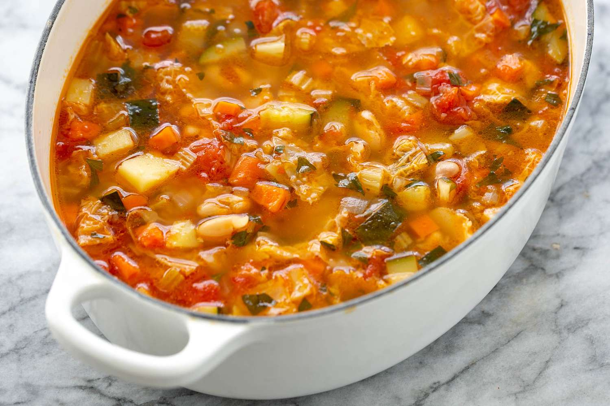

Back to HomePage
Coronation Chicken

Description
Cooked vegetables and chicken along with pasta, mixed
together in a stock-based sauce
Ingredients
- Cabbage
- Celery
- Carrots
- Chicken
- Pastina
- Broccoli
- Potatoes
- Vegetable stock
- Salt and pepper
Method
- Bring a pot of water to boil with two stock cubes
- Add the diced potatoes
- While the potatoes are cooking, dice the carrots, broccoli,
cabbage, chicken and put to the side
- Add the carrots, celery and broccoli into the same pan
- While this is cooking, start frying the diced chicken
- When the chicken is done, remove the excess liquid and put it in
the pot with the vegetables
- Bring another pot of salted water to the boil
- Leave everything to simmer, checking once in a while
- When the salted water is boiling, add the pastina
- When the pasta is done, drain it and leave it in the drainer
- With a potato masher, mash the pot of vegetables until it resembles
a thick mixture with a few lumps in it
- Add in the drained pasta, season it, stir it and serve